Neural Network Classification
(a) Overview
Neural Networks (NNs) are supervised machine learning models that resemble neurons in a human brain. Networks contain nodes (the neurons) which are organized into different layers which process input information. They consist of an input layer, where a feature of data is fed into the network. Following the input, the network has hidden layers which perform mathematical computations. In these layers, the neuron calculated the weighted sum of the inputs, then applies the activation function to create non-linearity. These are then passed to the final layer of outputs. This is where the outputs from the hidden layers are compiled and produce a prediction or classification.
For this project, utilizing neural networks provided the opportunity to specifically model the mediation of disease. Baseline models were created as a way to better understand the methodology of networks, but binary classification cannot provide evidence for disease progression. As such, methods for causual mediation analysis were researched and applied to form a model intended to better show the progressive relationship between Diabetes and Cardiovascular disease, in regards to kidney function. Due to the nature of cross-sectional data, these results will be associative and not definitively causational.
Overview Image
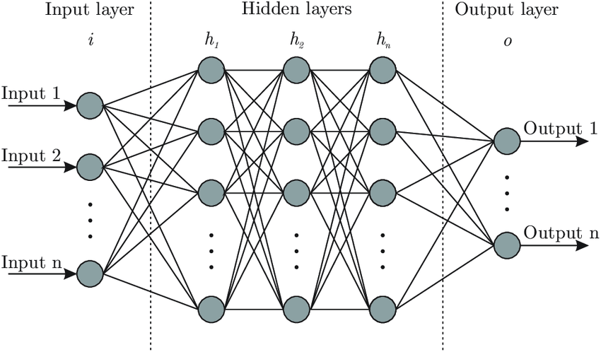
Medium: Designing Your Neural Networks
(b) Data Preparation
Data prep and cleaning initially followed the same steps as SVM and previous classification models. The datasets were loaded and columns were listed out. The features examined for each were the same. For the kidney dataset the features examined were serum creatinine, BUN, serum albumin, phosphorus, potassium, urine albumin, urine creatinine, and albumin-to-creatinine ratio. These are kept as they are direct clinical markers of kidney filtration function. An abnormal level indicates progression of weakening kidney function, particularly creatinine and BUN (Blood Urea Nitrogen), which indicate accumulation of waste buildup in the blood. The features kept for diabetes were HbA1c, fasting glucose, HDL, and insulin. HbA1c and fasting glucose are the primary criteria used to give an official diabetes diagnosis, so they are expected to carry the strongest signal. Abnormal levels of insulin indicate progression of insulin resistance, the primary mechanism of Type 2 Diabetes. Finally, the features used for the cardio dataset are LDL cholesterol, total cholesterol, average systolic blood pressure, and CRP. These are kept because they are the exact variables used to construct the cardiovascular risk label, which was defined by clinical thresholds on LDL, total cholesterol, systolic BP, and CRP.
For each dataset, the ‘SEQN’ column was dropped as this provided no information for classification. Missing values were checked in each data set, as well as checking for NHANES codes that are used instead of null.Missing values were handled using median imputation, scaled by fit_transform implemented to transform the data. The class distribution is then printed, revealing much higher amounts of healthy patients in the kidney dataset (86.2%) and diabetes (89.3%). The cardio dataset also is skewed towards healthy individuals, but the data set is more so split (60.4% healthy). For the mediation experiment, rather than only baseline, the three datasets were merged. In the merged dataset, the cardio distribution changed to 45% healthy, meaning at-risk patients are now the slight majority. Clinically, this is reasonable, as patients with kidney and diabetes measurements taken are more likely to also have complex metabolic healthy conditions that could skew measurements toward higher cardiovascular risk.
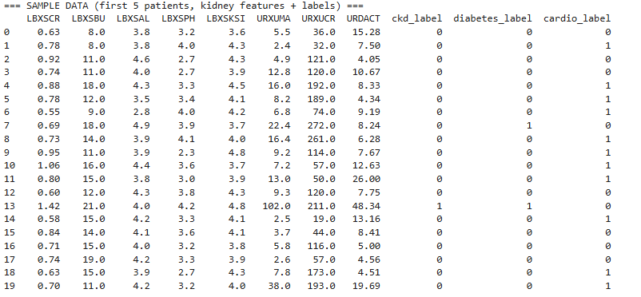
Printed labels (0 = healthy, 1 = illness) + Kidney Features
As seen in previous machine learning methods, class imbalance is likely to skew classifications toward the dominant class, creating a tradeoff between precision and recall. Neural networks are similarly affected — a model trained on imbalanced data will perform well at predicting healthy patients but will miss a disproportionate number of true positive disease cases, resulting in low recall. This was a consistent pattern observed across previous methods in this project. There are many options for handling class imbalance, but in the context of biomedical data, class-balanced sample weighting and cost-sensitive learning were implemented. Techniques such as SMOTE were considered but not used, as SMOTE interpolates between real data points to generate synthetic samples, producing biomarker profiles that do not correspond to real physiological states. These functions are described further in the code section.
Neural networks require labeled data for training, therefore each observation must have both input features (biomarker measurements) and ouput labels (diagnostic evaluations). As with many supervised learning methods, the training and testing sets must be disjoint to avoid data leakage, or occurences of the model 'cheating'. The dataset was split into the training set (60%) which the model learns from. In the training set, the model can see the labeled targets and adjusts its weight until the given epochs to minimize prediction error. The remaining 40% of the dataset is the testing set, used to evaluae the model's performance when it is not given the target values.
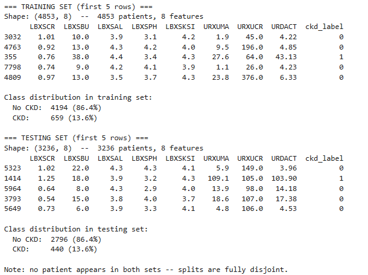
Snippets of training and testing set, stratified to have same proportion of classes
Dataset Links
(c) Code
Neural network classification was implemented in Python using scikit-learn's MLPClassifier across three NHANES datasets, with shared helper functions stored in network_helpers.py and imported into each notebook. The network architecture consisted of two hidden layers with 64 and 32 units using ReLU activation, and a single sigmoid output node (default for MLPClassifier call) for binary classification. The Adam optimizer handled learning rate adaptation automatically, and each model was trained using backpropagation over 20 to 100 epochs depending on the dataset, with loss printed at each iteration. Class imbalance was addressed using sample weights inversely proportional to class frequency, passed directly when .fit is called. Confusion matrices and training loss curves were saved as images after evaluating on the held-out test set. To reproduce: scikit-learn 1.9.0, hidden_layer_sizes=(64, 32), activation='relu', random_state=42, 60/40 stratified split.
Notebooks
(d) Results
Different models were implemented and trained for the three NHANES datasets. ReLU was chosen as the activation function for the hidden layers as it is one of the most widely used and reliable choices for this type of classification problem, and tends to train faster and more stably than alternatives like tanh or sigmoid in hidden layers. The output layer uses sigmoid activation, which is a good choice for binary classification since it converts the network's raw output into a probability between 0 and 1, making it easy to interpret as the likelihood that a patient has the condition being predicted
Binary Neural Network Architecture (hidden layers = (64, 32))
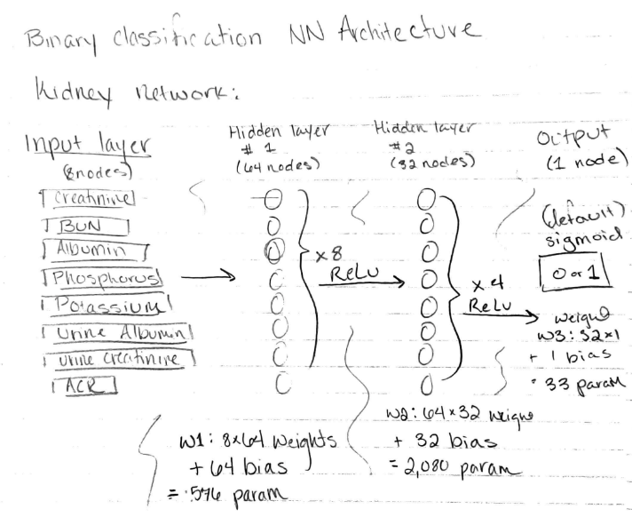
Figure 6. Neural network architecture including input variables, hidden layer, activation functions, weights, and output classification.
Baseline Classification Results
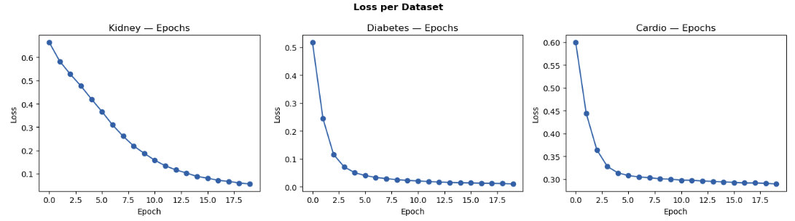
The epoch plot shows training loss across 20 epochs for all three datasets. Kidney shows a steady downward slope throughout, indicating the model was still learning at epoch 20 and would benefit from additional training. Diabetes converges rapidly within the first few epochs using HbA1c alongside lipid and insulin markers, reflecting the strong metabolic signal in those features. Cardio follows a similar pattern, converging quickly once the direct label-defining features were included. One of the more interesting challenges encountered during this section was determining which features to include for each dataset. For diabetes, removing HbA1c and fasting glucose entirely resulted in a model that could not learn at all, with loss plateauing around 50% regardless of how many epochs were run. This means without glycemic markers, the lipid profile of diabetic patients is not sufficiently distinct from healthy patients to classify reliably. HbA1c was retained as it is a genuine biological marker of blood sugar control, but fasting glucose was excluded. For cardiovascular, multiple feature combinations were tested including indirect markers such as HDL, triglycerides, and diastolic blood pressure, but none produced meaningful learning, loss barely moved across hundreds of epochs. The direct label-defining features were ultimately used, noting that strong performance here reflects feature-label alignment rather than independent predictive power.
Baseline Kidney
The kidney network achieved 99.2% accuracy, 94.4% precision, and 98.3% recall, performing strongly across all metrics. The loss curve dropped steadily from 0.66 at epoch 1 and had not fully flattened by epoch 20, indicating the model may still be learning. This gradual convergence reflects that the 8 biomarkers used are related to kidney filtration failure but not definitionally linked to the CKD label. The network had to learn a real boundary from the data rather than recovering a rule it was handed. The high recall of 98.3% is particularly meaningful in a clinical context, as missing a CKD diagnosis carries serious consequences for patient outcomes.
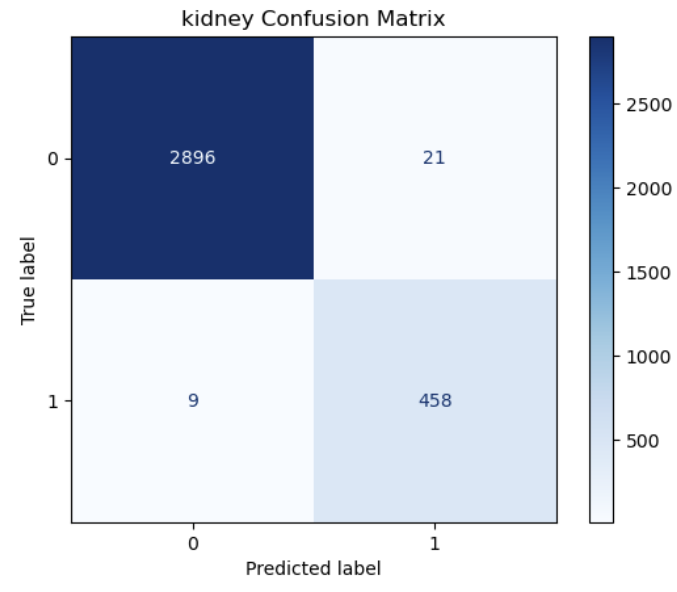
Confusion matrix showing neural network classification performance on kidney dataset
Baseline Diabetes
The diabetes network used HbA1c alongside HDL, insulin, total cholesterol, LDL, and triglycerides, excluding fasting glucose. Without HbA1c, the model could not learn at all, confirming that the lipid and insulin markers alone are not specific enough to diabetes to produce a meaningful boundary. With HbA1c included, the network converged rapidly within the first few epochs, dropping from 0.518 at epoch 1 to near zero by epoch 9. This reflects the strong signal HbA1c carries as a marker of sustained blood sugar dysregulation. Performance was strong, with high recall confirming the network effectively identified diabetic patients. The fast convergence is partly explained by HbA1c's strong relationship with the diabetes label, though the inclusion of lipid markers means the model is learning from broader metabolic indicators than just a single diagnostic criterion.
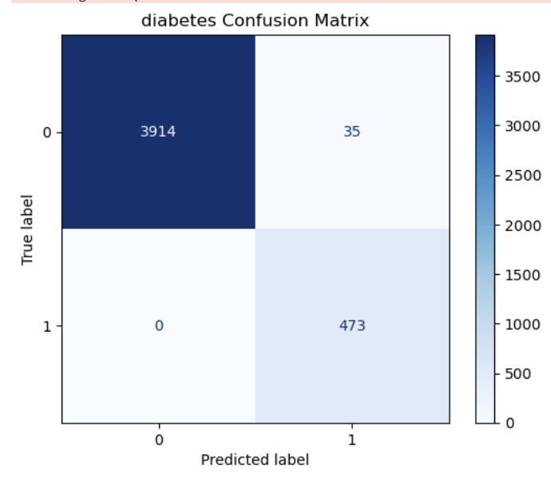
Confusion matrix showing neural network classification performance on diabetes dataset
Baseline Cardiovascular
Multiple combinations of indirect markers were tested; HDL, triglycerides, diastolic blood pressure, and CRP. However, none produced meaningful learning. Loss barely moved across hundreds of epochs regardless of architecture or training duration, demonstrating that these indirect markers simply do not carry enough signal to classify cardiovascular risk as defined by the label. This is a real finding in itself: the cardiovascular risk label constructed from LDL, total cholesterol, systolic blood pressure, and CRP thresholds cannot be predicted from indirect lipid and pressure markers alone, which highlights how specifically the label was defined. The direct label-defining features were ultimately used, producing 97.2% accuracy and 98.1% recall. As with diabetes, the strong performance here reflects feature-label alignment. This is acknowledged as a limitation consistent with all other methods applied to the cardiovascular dataset in this project, where the same pattern was observed across SVM, decision trees, and naive Bayes.
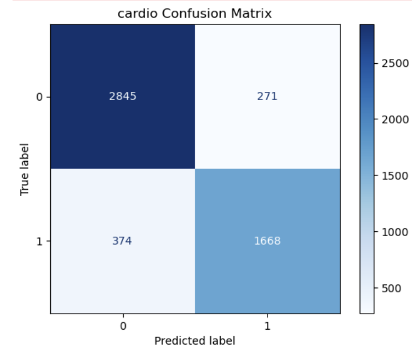
Confusion matrix showing neural network classification performance on cardio dataset
Neural Mediation Analysis
Beyond binary classification, multilayer perceptron (MLP) network was used to conduct a mediaiton analysis examining whether Chronic Kidney Disease acts asn intermediate condition between diabetes and cardiovascular disease. This section of the project aimed to address the core research question directly. While not the primary implementation used, the principle framework and reference used was the Kenny and Baron modeling approach. This method is not intended to be used with neural networks, rather with linear regression (specifically ordinary Least Squares). Therefore, the general steps of this method were utilized in the neural network rather than the regression model itself. The Baron and Kenny mediation declares a predictor variable (X), a mediator variable (M), and an outcome variable (Y). The steps of the Baron and Kenny framework was applied to train the neural network.
Diabetes → CKD → Cardiovascular Risk Pathway
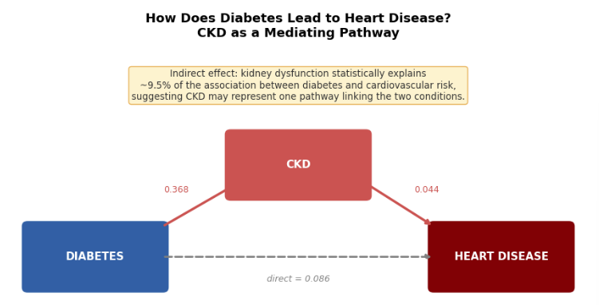
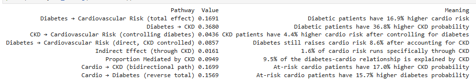
For this pathway, diabetes indicators were used as predictors, followed by CKD as the mediator, and cardiovascular risk as the outcome. Different networks were trained using the Baron and Kenny framework.
Diabetic patients had a 16.9 percentage point higher predicted cardiovascular risk than non-diabetic patients overall. This is the total relationship before the pathways are seperated. This indicates a higher chance of developing cardiovascular disease if diabetes is pre-existing. Diabetic patients had a 36.8 percentage point higher probability of having CKD compared to non-diabetic patients. This is expected, as chronic high blood sugar gradually damages the small blood vessels in the kidneys over years, impairing their ability to filter waste. A particularly interesting finding is that diabetes increases risk of kidney disfunction more than it raises the risk of cardiovascular disease, indicating the diabetes-to-kidney pathway may be stronger than diabetes-to-CVD. In a clinical context, this is supported by the fact that kineys are one of the first affected organs due to long-term diabetes.
Cardiovascular → CKD → Diabetes Pathway
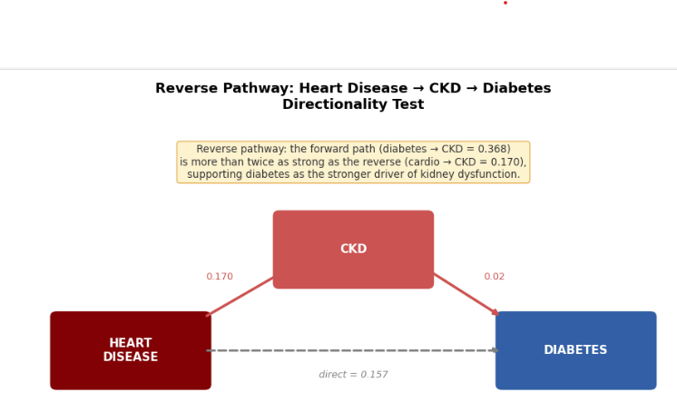
For this pathway, the predictor is cardiovascular label, using CKD as the mediator, and the outcome is now diabetes risk.
From the diagrams, the direction from cardiovascular risk to Chronic Kidney Disease is significantly weaker than the direction from diabetes to CKD, diabetic patients showed a 36.8% higher CKD probability compared to only 17.0% for at-risk cardiovascular patients. Though the bidirectional relationship between cardiovascular disease and diabetes is well established clinically, the role each condition plays in driving kidney dysfunction differs substantially. Diabetes appears to be the stronger driver of kidney damage, which is consistent with the known consequece of chronic hyperglycemia gradually impairing kidney filtration over time.
This provides some statistical support that Chronic Kidney Disease acts as a partial mediator in the Diabetes-to-CVD pathway, as 9.5% of the relationship aligns with kidney disfunction. The other 90.5% is other biological facors, such as systemic inflammation and artierial damage. CKD is not the primary mechanism from Diabetes to CVD, but it is meaningful in its role as an intermediate condition between metabolic and cardiovascular disease. Formal causal confirmation would require longitudinal data observing disease development over time, which is beyond the scope of this cross-sectional NHANES analysis.
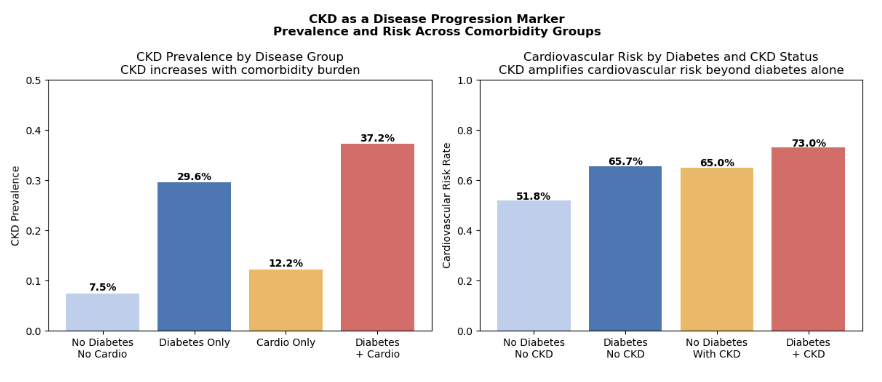
Bar graph show prevalence and risk of CKD dependent on comorbidities
The bar charts provide further visualization to represent Chronic Kidney Disease as an intermediate condition. The left panel shows the prevalance of CKD across disease groups. Baseline CKD rates (no pre-existing condition) is only 7.5%. There is an increase in this value if the patient has diabetes or cardiovascular risk. Particularly, diabetes has a substantial jump in CKD prevalance, not just from baseline, but from cardiovascular as well. This further supports the findings above, that diabetes in the larger driver of weakening kidney function. Combined, the conditions lead to the highest rate of CKD, an expected clinical result, as both conditions create further stress on the kidneys.
As the major pathway which reveals the intermediate role of CKD, the right panel shows the rate of cardiovascular risk in regards to the relationship between diabetes and CKD. In all relationships, the risk for cardiovascular disease remains fairly high, with the highest being both pre-existing conditions. The other relationships do not fall far behind, as all have substantial risks for cardiovascular disease. It should be noted that the baseline group is seen as 51%. This is not the general healthy population, instead patients who appeared in all three NHANES datasets (merged from datasets with the same SEQN, or Respondent Sequence Number). Patients which had comprehensive measurement for all three categories of conditions tend to be higher risk groups in general; older patients and those with existing metabolic health concerns.
An interesting finding from the right panel, is the similar risk value for cardiovascular disease between the sole CKD and Diabetes group. This suggests that kidney disfunction is an independent and equally meaningful cardiovascular risk factor, not just a side effect of diabetes. As all groups remain high, there is still a considerable increase in risk when both Diabetes and CKD are present. This further supports that CKD sits in the middle of the disease pathway, amplifying cardiovascular risk beyond what diabetes produces on its own.
Mediation + HbA1c (Hemoglobin A1c) Biomarker Experiment
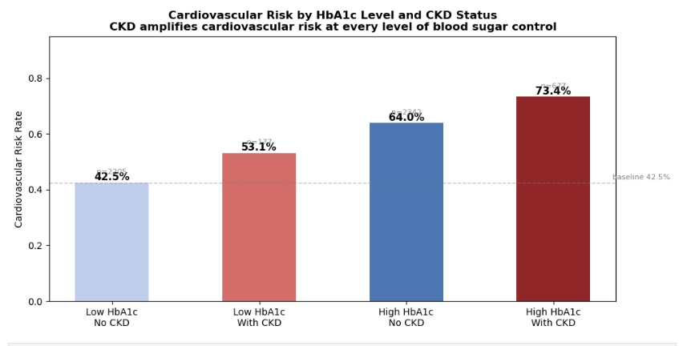
Relationship between HbA1c and CVD in regards to Cardiovascular risk
HbA1c is a significant biomarker used for clinical diagnosis of Type 2 diabetes. As seen in previous methods, there is a clear boundary which seperates risk groups in the NHANES dataset depending on the level of both HbA1c and fasting glucose. HbA1c measures the percentage of hemoglobin in a patient's blood with glucose attached. Red blood cells live for 90 to 120 days. To definitively test for Diabetes, HbA1c is a continuous value which reveals average blood sugar levels over a red blood cell's lifespan. Normal is typically below 5.7%, Diabetes is 6.5% and above, and prediabetic levels are those inbetween. As such, the classification model fails to view this value as continuous, motivating this experiment to examine different levels of HbA1c, along with prevalance of CKD. As forementioned, NHANES is not longitudinal, so this can only provide evidence, but not a definitive causal relationship.
From the chart, increasing levels of HbA1c show an increase in cardiovascular risk, which is a known relationship clinically. This is because chronically elevated blood sugar promotes systemic inflammation, leading to arterial damage over time. The baseline for this group differs from the binary experiment above, as this analysis defines the low-risk group as patients with genuinely low HbA1c values, while the previous experiment separated patients by whether they met the clinical diabetes threshold or not. This produces a lower and more precise baseline cardiovascular risk of 43.3% compared to 51.8% in the binary analysis. Along with this, the presence of CKD also causes an increase in cardiovascular risk regardless of HbA1c level, supporting the idea that kidney dysfunction contributes to cardiovascular outcomes independently of blood sugar control. This pattern is consistent with CKD acting as an intermediate condition, not simply a byproduct of diabetes severity, but an active pathway through which metabolic dysfunction translates into cardiovascular risk.
(e) Conclusions
Across all three datasets, the neural network classification models performed strongly, with kidney achieving 99.2% accuracy, diabetes near-perfect recall, and cardiovascular risk at 97.2% accuracy. These results are consistent with findings from previous methods used in this project, and confirm that the selected biomarkers carry meaningful signal for classifying disease status in each condition.
One important distinction in this neural network implementation, particularly the binary classsification, is how class imbalanced was handled during training. In previous methods, class imbalance has a significant influence on the outcome of the model's performance, demonstrating a constant tradeoff between precision and recall due to the high number of healthy patients compared to those with the conditions. As such the majority class was favored, and recall was prioritized in order to reduce the number of false negatives. At each epoch, the model computes a loss value to evaluate how accurate the predicitions are, then adjusting the weights to reduce that loss. Neural networks are heavily influenced by class imbalance, and without any correction the loss will be averaged equally across all patients, despite the imbalance. This would led to the same issue as before, where the model succeeds at finding healthy patients, but has very low recall.
In order to address this, class-balanced sample weights were implemented into the binary classification model. Using the weight that is inversely proportional to the class frequency. By doing so, more weight is assigned to the minority class, making up for some of the class imbalance present in these NHANES dataset. A CKD patient receives approximately six times more weight than a healthy patient, meaning the network is penalized six times more severely for missing a CKD case than for misclassifying a healthy one. This forces the weight updates at every epoch to take the minority class into account, resulting in a model with a more balanced tradeoff, supported by the printed confusion matrix.
The more novel contribution of this section is the neural mediation analysis. Rather than focusing on solely classification, it aimed to examine the role of CKD in the Diabetes-to-Cardiovascular pathway and the reverse. The results provide associative evidence consistent with this pathway. Diabetes was found to raise the probability of CKD by 36.8% , more than twice the strength of the reverse direction, supporting the idea that diabetes is a stronger driver of weakening kidney function. Approximately 9.5% of this pathway was statisticly explained by the overlap through CKD, with the remaining attributable to other biological mechanisms associated with Diabetes.
As supported by previous methods, such as decision trees, the HbA1c biomarker reinforced these findings, showing a consistent relationship where worsening blood sugar control corresponded with higher CKD prevalance and greater cardiovascular risk. CKD was found to raise cardiovascular risk independently at every level of HbA1c, further supporting its role as an active intermediate condition rather than a passive comorbidity. The prevalence charts showed that patients with both diabetes and CKD carried the highest cardiovascular risk of all groups, while CKD alone raised cardiovascular risk to nearly the same level as diabetes alone, a finding that underscores the independent cardiovascular burden of kidney dysfunction.
The final results of this section support that CKS plays a menaingful role as a mediator in the Diabetes-to-cardiovasculr disease pathway, more so than the reverse pathway of cardiovascular risk to Diabetes. However, it is only a partial mediator, not a dominant mechanism. The limitations of NHANES datasets disallow making conclusive mediation findings, more sore ssociative findings. In order to have further support for a causual relationship, longitudinal data is needed in order to see the progression of disease in patients over continuous time periods, not at cross-sections.